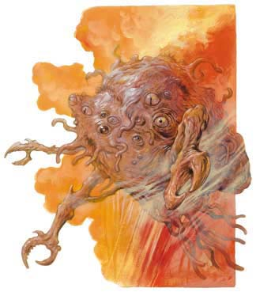

超大型异怪

| 生命骰： | 12d8+48（102点生命值） |
| 先攻： | +3 |
| 速度： | 40英尺，飞行80英尺（普通） |
| 防御等级： | 22（-2体型，+3敏捷，+11天生），接触11，措手不及19 |
| 基本攻击／擒抱： | +9/+25 |
| 攻击： | 爪击 +16 近战 |
| 全力攻击： | 3次爪击 +16 近战，8次触须 +10 近战 |
| 伤害： | 爪击 2d8+8/19�C20，触须 1d4+4+1d6强酸 |
| 面宽／触及： | 15英尺/10英尺 |
| 特殊攻击： | 酸蚀暴雨、紧勒（1d4+4+1d6强酸）、精通攫抓、类法术能力 |
| 特殊能力： | 强酸免疫、黑暗视觉60英尺、无形躯体、再生5、诡异迷雾 |
| 豁免： | 强韧+8，反射+9，意志+11 |
| 属性： | 力量26，敏捷17，体质18，智力14，感知17，魅力13 |
| 技能： | 专注+16，躲藏+11，聆听+15，潜行+15，侦查+15，生存+15 |
| 专长： | 战斗施法、飞掠攻击、精通重击（爪击）、闪电反射、武器专攻（爪击） |
| 地域： | 任何山地或丘陵 |
| 组织： | 单独、成对或风暴群（3�C10只） |
| 挑战等级： | 12 |
| 宝物： | ― |
| 阵营： | 通常中立邪恶 |
| 进化： | 13�C18HD（超大型）；19�C36HD（巨型） |
天空泣血兽是由考尔提法师创造的恐怖梦魇造物，最初作为坐骑役使（考尔提详见本书前文）。非骑乘状态时，它们慵懒地飘浮在距地数英里的高空，仅当捕食或为折磨地面生物取乐时才会降临。
受袭者鲜少能窥见其真容――它始终被倾泻灼红酸液的黄白雾气笼罩。雾中隐现的淡黄触须与几丁质长爪，暗示着云团内的可怖存在。若雾气被驱散，可见其本体实为毛发、眼球与蠕虫状卷须纠缠的噩梦聚合体。三只巨爪环列躯干赤道位，八条黄色触须如水母腕足垂悬下方。该生物天然具备空气浮力，借由体表孔洞喷射气流实现灵巧空战。
考尔提骑乘时会将直径5英尺的平台（多为木质）捆缚于泣血兽背部，再以大量绳索固定身躯。骑手通过语音指令与手势操控坐骑。天空泣血兽拥有相当智能，任何骑乘者皆须保持敬畏，否则恐在万丈高空突遭反噬。
天空泣血兽几乎只用考尔提语交流（亦通晓通用语与木族语）。
天空泣血兽并非仅为猎食而战，常以制造痛苦与恐慌为乐袭击地面目标。此类"消遣性"攻击多表现为远程倾泻酸雨或施展类法术能力，仅当自卫、捕食（尤嗜精类生物血肉）或奉骑手之命时方发动肉搏。其利爪可撕裂深长创口，触须表面则覆满强酸。
酸蚀暴雨（Acid Rain）（Su）：天空泣血兽的触须持续渗滴粘稠红酸，酸液自雾中倾泻而下的景象正是其名由来。在该生物悬停或飞越区域内的所有活物每轮承受2d4强酸伤害（反射DC19减半）；酸液生效后即刻惰化，故目标仅在被笼罩期间持续受害。
紧勒（Constrict）（Ex）：通过成功的触须擒抱检定，天空泣血兽可对擒获目标造成1d4+4钝击伤害，被紧勒者每轮额外承受1d4强酸伤害。
精通攫抓（Improved Grab）（Ex）：若天空泣血兽以触须命中体型至少小一级的对手，除正常伤害与强酸伤害外，可视为自由动作发动擒抱（不引发借机攻击，擒抱加值+25）。成功擒抱后当轮立即发动紧勒。此后可选择正常维持擒抱，或仅以单条触须束缚对手（擒抱检定承受-20罚值，天空泣血兽本体不被视为遭擒抱）。无论何种形式，后续每轮成功的擒抱检定均自动造成触须及强酸伤害。
类法术能力：随意施展―闪光术flare、电爪shocking grasp、风墙术wind wall；每日3次―召雷术call lightning、操控风向control winds,、造风术gust of wind；每日1次―操控天气control weather、死云术cloudkill。施法者等级12级；豁免DC 17 + 法术等级。
无形躯体（No Discernible Anatomy）（Ex）：天空泣血兽免疫重击及偷袭，且不能被夹击。
再生（Regeneration）（Ex）：火焰与力场伤害可抑制天空泣血兽的再生。非生命值伤害型攻击无视再生，因饥饿、干渴或窒息损失的生命值亦无法恢复。
诡异迷雾（Unnatural Mist）（Su）：天空泣血兽周身60英尺半径内持续弥漫诡异白雾。此雾赋予其躲藏检定+10环境加值，并对雾外攻击者构成四分之三隐蔽（30%失手率）。
雾内生物视野不受阻碍。
身处雾中的生物对抗德鲁伊法术时获得法术抗力22。强风可驱散迷雾，但风止后2d6轮内雾气将自然重组。